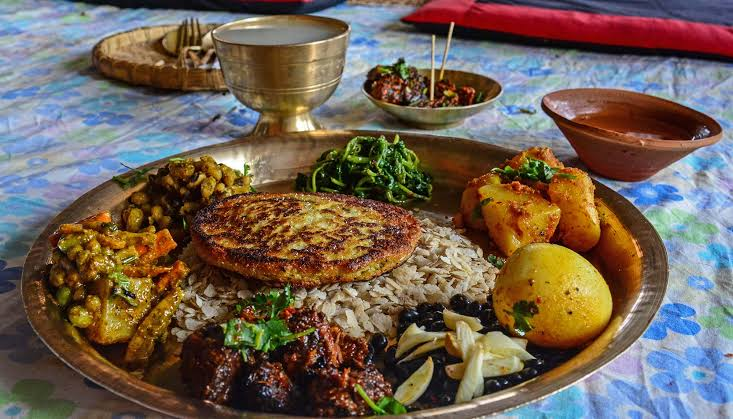
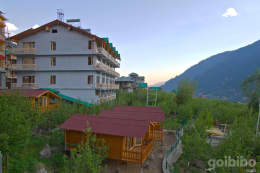

daal bhat

Chiura Tarkari

Quality service is our Motto
毎日6:00、12:00、15:00に出来たてをご用意してお待ちしております。
HImalayan trestaurentは2010年にインドから来たマム・オートゥイユが屋台でクロワッサンを売り始めたのが始まりです。現店長マーサで12代目となりますが、一番人気のクロワッサンは創業当時の味を守り続けています。大きなガラス越しに通りが見える店内入り口そばには、主にソフト系のパンを並べています。 ハムとクリームチーズのデニッシュはデニッシュ生地の中に柔らかいクリームチーズとハムを包んだフカフカパンです。丸ごとカボチャパンは中に潰したカボチャを餡にしてぎっしり詰め込んだカボチャの味が充分に堪能できます。ひまわりパンは生地にひまわりの種を混ぜた独特の食感も楽しめます

毎日6:00、12:00、15:00に出来たてをご用意してお待ちしております。